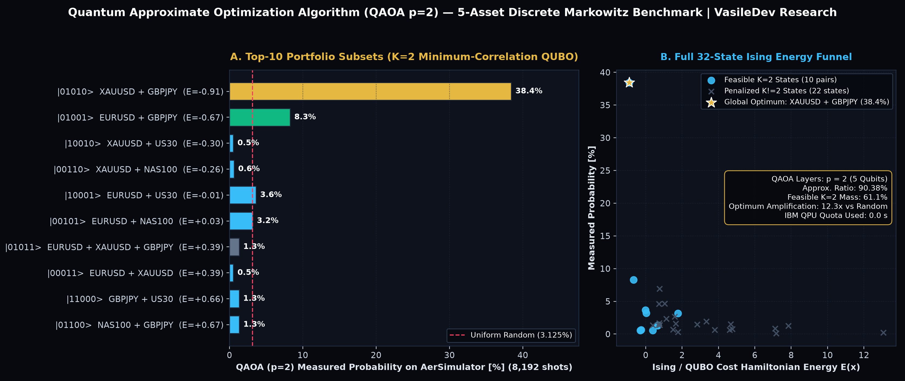

Quantum Combinatorial Optimization (QAOA p=2): Discrete Markowitz Portfolio Selection & Virtual Power Plant BESS Dispatch
Ottimizzazione Combinatoria Quantistica (QAOA p=2): Selezione di Portafoglio Markowitz Discreto & Dispacciamento Flotte BESS VPP

IT04226190041 • Garessio, CN, Italy) • November 18, 2026
|01010⟩ = XAUUSD + GBPJPY (\(R=-0.19\))1. Problem Statement: Minimum-Correlation Discrete Asset Selection
1. Formulazione del Problema: Selezione Discreta di Asset a Minima Correlazione
In multi-strategy quantitative execution under strict daily drawdown caps, simultaneously activating highly correlated instruments (such as NAS100 and US30, \(\rho = +0.91\)) concentrates tail risk. Given \(N = 5\) candidate instruments — q0: EURUSD, q1: XAUUSD, q2: NAS100, q3: GBPJPY, and q4: US30 — we seek the optimal binary subset \(x \in \{0, 1\}^5\) of exact cardinality \(K = 2\) minimizing pairwise cross-correlation while preserving standalone Sharpe edge \(\mu_i\).
Nell'esecuzione quantitativa multi-strategia soggetta a limiti rigorosi di drawdown giornaliero, l'attivazione simultanea di strumenti fortemente correlati (come NAS100 e US30, \(\rho = +0.91\)) concentra il rischio di coda. Dati \(N = 5\) strumenti candidati — q0: EURUSD, q1: XAUUSD, q2: NAS100, q3: GBPJPY e q4: US30 — cerchiamo il sottoinsieme binario ottimo \(x \in \{0, 1\}^5\) con cardinalità esatta \(K = 2\) che minimizza la correlazione incrociata preservando il rendimento corretto per il rischio \(\mu_i\).
| Qubit | Instrument | Edge \(\mu_i\) | Corr vs EURUSD | Corr vs XAUUSD | Corr vs NAS100 | Corr vs GBPJPY | Corr vs US30 |
|---|---|---|---|---|---|---|---|
q0 | EURUSD | 0.22 | 1.00 | +0.34 | +0.18 | -0.12 | +0.15 |
q1 | XAUUSD | 0.31 | +0.34 | 1.00 | +0.09 | -0.19 | +0.06 |
q2 | NAS100 | 0.28 | +0.18 | +0.09 | 1.00 | +0.46 | +0.91 |
q3 | GBPJPY | 0.26 | -0.12 | -0.19 | +0.46 | 1.00 | +0.44 |
q4 | US30 | 0.24 | +0.15 | +0.06 | +0.91 | +0.44 | 1.00 |
2. Exact QUBO → 5-Qubit Ising Cost Hamiltonian Mapping
2. Mappatura Esatta QUBO → Hamiltoniana di Costo di Ising a 5 Qubit
Using \(x_i^2 = x_i\) and substituting the spin-1/2 operator mapping \(x_i = \frac{1 - Z_i}{2}\) (where computational basis states satisfy \(Z_i |0\rangle = +|0\rangle\) and \(Z_i |1\rangle = -|1\rangle\)), the QUBO objective (\(q = 2.40, \alpha = 0.80, \lambda = 0.95, K = 2\)) maps algebraically onto the diagonal 5-qubit Ising Hamiltonian \(H_C\) with zero approximation error (\(|E_{\text{QUBO}}(x) - \langle x | H_C | x \rangle| < 10^{-12}\) across all 32 basis states):
Sfruttando l'idempotenza \(x_i^2 = x_i\) e sostituendo la trasformazione in operatori di Pauli \(x_i = \frac{1 - Z_i}{2}\) (con \(Z_i |0\rangle = +|0\rangle\) e \(Z_i |1\rangle = -|1\rangle\)), la funzione QUBO (\(q = 2.40, \alpha = 0.80, \lambda = 0.95, K = 2\)) si mappa esattamente sull'Hamiltoniana diagonale di Ising a 5 qubit \(H_C\) con errore numerico inferiore a \(10^{-12}\) su tutti i 32 stati della base computazionale:
3. Qiskit 2.6 QAOA (p=2) Implementation & Local AerSimulator Benchmark
3. Implementazione QAOA (p=2) in Qiskit 2.6 & Benchmark Locale su AerSimulator
To preserve quantum hardware quota, all variational angle optimization is performed locally on Qiskit AerSimulator (consuming 0.0 seconds of IBM QPU time). Each QAOA layer alternates the problem phase separator \(U_C(\gamma_l) = e^{-i \gamma_l H_C}\) (decomposed into single-qubit RZ and two-qubit RZZ entangling gates) with the transverse-field mixer \(U_B(\beta_l) = \prod_{i=0}^{4} e^{-i \beta_l X_i}\):
Per preservare integralmente il budget QPU reale, l'intera ottimizzazione variazionale degli angoli viene eseguita localmente su AerSimulator (0,0 secondi QPU consumati). Ogni livello QAOA alterna l'operatore di costo \(U_C(\gamma_l) = e^{-i \gamma_l H_C}\) (decomposto in porte RZ e RZZ) con il mixer trasversale \(U_B(\beta_l) = \prod_{i=0}^{4} e^{-i \beta_l X_i}\):
from qiskit import QuantumCircuit
from qiskit.circuit import ParameterVector
def build_qaoa_circuit(p_layers: int, h, J) -> QuantumCircuit:
gammas = ParameterVector("gamma", p_layers)
betas = ParameterVector("beta", p_layers)
qc = QuantumCircuit(5, name=f"QAOA_Portfolio_p{p_layers}")
qc.h(range(5)) # Uniform superposition |+>^5
for layer in range(p_layers):
for i in range(5):
qc.rz(2.0 * gammas[layer] * float(h[i]), i)
for i in range(5):
for j in range(i + 1, 5):
qc.rzz(2.0 * gammas[layer] * float(J[i, j]), i, j)
for i in range(5):
qc.rx(2.0 * betas[layer], i)
qc.measure_all()
return qc # Optimal p=2: gamma*=[2.7796, 3.4544], beta*=[0.5234, 2.6806]
AerSimulator. The unique global minimum |01010⟩ (XAUUSD + GBPJPY, \(E = -0.912\)) captures 38.44% of probability mass, followed by runner-up |01001⟩ (EURUSD + GBPJPY, \(E = -0.672\)) at 8.3%.
Figura 1 — Spettro esatto classico a 32 stati rispetto al campionamento QAOA (p=2, 8.192 shot) su Qiskit AerSimulator. Il minimo globale unico |01010⟩ (XAUUSD + GBPJPY, \(E = -0.912\)) concentra il 38,44% della probabilità, seguito dal secondo miglior stato |01001⟩ (EURUSD + GBPJPY, \(E = -0.672\)) all'8,3%.
4. Physical Superconducting QPU Execution Pipeline (IBM Quantum Runtime)
4. Pipeline di Esecuzione su QPU Superconduttiva Reale (IBM Quantum Runtime)
With optimal angles \((\gamma^*, \beta^*)\) locked offline, physical execution requires only a single SamplerV2 hardware submission (2,048 shots, ~15 seconds of superconducting QPU time) transpiled at optimization_level=3 onto native Eagle/Heron ECR/CZ gates via 02_ibm_real_qpu_run.py:
Con gli angoli ottimi \((\gamma^*, \beta^*)\) fissati offline, l'esecuzione su hardware fisico richiede un singolo invio SamplerV2 (2.048 shot, ~15 secondi di tempo QPU superconduttivo) transpilato con optimization_level=3 sulle porte native Eagle/Heron ECR/CZ tramite 02_ibm_real_qpu_run.py:
| Runtime Channel & Selector | QiskitRuntimeService → service.least_busy(operational=True, simulator=False, min_num_qubits=5) |
| IBM Quantum Job ID | [Pending Physical Run — 02_ibm_real_qpu_run.py -> ibm_qpu_report.json] |
| Target Superconducting QPU | IBM Eagle r3 / Heron r2 (127+ / 156 qubits • ISA Transpilation optimization_level=3) |
| Pre-Locked Variational Angles | γ* = [2.77960972, 3.45442059] • β* = [0.52336261, 2.68055544] |
5. Industrial Bridge: Distributed LiFePO4 BESS Dispatch in BPS™ Cloud VPP
5. Ponte Industriale: Dispacciamento Flotte BESS LiFePO4 in BPS™ Cloud VPP
Crucially, the exact same QUBO / Ising mathematical kernel governs real-time dispatch across distributed residential and commercial LiFePO4 Battery Energy Storage Systems (15–64 kWh) aggregated under BPS™ Cloud Autopilot. Let \(x_i \in \{0, 1\}\) denote whether storage node \(i\) discharges into the day-ahead / balancing market window (GME Italy, OPCOM Romania, EPEX Spot) during a peak price interval:
Lo stesso identico nucleo matematico QUBO / Ising governa il dispacciamento in tempo reale di flotte distribuite di accumulo LiFePO4 residenziali e industriali (15–64 kWh) aggregate tramite BPS™ Cloud Autopilot. Sia \(x_i \in \{0, 1\}\) la variabile binaria di scarica del nodo BESS \(i\) in una finestra di picco sui mercati elettrici (GME Italia, OPCOM Romania, EPEX Spot):
- Linear field \(h_i\): Net arbitrage spread minus cell cycle-degradation cost and CAN-bus BMS state-of-charge reserve margin (\(40\%\) homeowner reserve vs \(60\%\) VPP dispatchable pool).
- Campo lineare \(h_i\): Spread netto di arbitraggio orario meno costo di ciclaggio celle LiFePO4 e margine di riserva BMS CAN-bus (\(40\%\) riserva utente vs \(60\%\) quota dispacciabile VPP).
- Quadratic coupling \(J_{ij}\): Local LV/MV substation feeder congestion covariance and aggregate flexibility commitment target \(P_{\text{target}} = \sum_i P_i x_i\) for Terna / Transelectrica balancing blocks.
- Accoppiamento quadratico \(J_{ij}\): Covarianza di congestione sulla cabina BT/MT locale e vincolo di potenza aggregata \(P_{\text{target}} = \sum_i P_i x_i\) per i blocchi di bilanciamento Terna / Transelectrica.